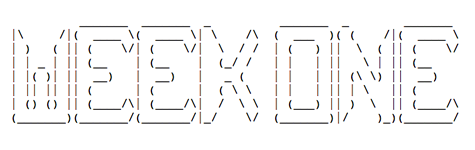
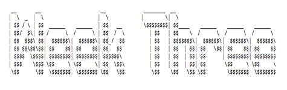
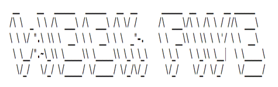
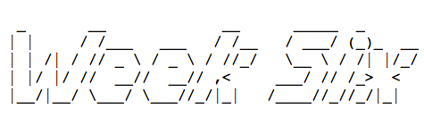
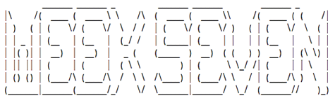
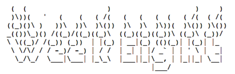
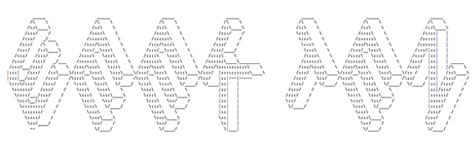
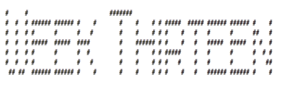
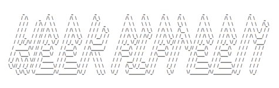

What we call a videogame is not a product. It's the creation of an author and her accomplice, the player; it is handmade by the former and personally distributed to the latter. The videogame is a zine. -- Anna Anthropy, Rise of the Videogame Zinesters
This seminar is about literary and cultural approaches to prototyping indie games—games as gifts, letters, ephemera, hacks, souvenirs, mix tapes, commentaries, glitches, jokes, tricks, satire, memoirs, self-care, lo-fi, bit collage, accidents, performance, activism, zines . . . We'll play some games, read some history and critical theory, and experiment with an array of design and development techniques from paper to screen. Early in the term, you'll select a few "-isms" (e.g., Futurism, Minimalism, and Surrealism) from the nineteenth and twentieth centuries that will inform your approaches to prototyping throughout the seminar, and by the end you'll create and share your own indie games, complete with their own user manuals. In the process, you'll learn about the intersections of new media with art, literature, and politics, and we'll demystify the popular assumption that only a "select few" can make games. I will not assume that you are a gamer, want to be a gamer, have ever made an indie game, or know how to develop or design games. I will also not assume that you've taken a course in digital studies. Technical competency required: know how to send an email.
As you play games throughout the term, I encourage you to support the authors and developers, most of whom accept donations via Patreon or the like.


WEEK 1 (SEPT 7): GAMES + ZINES
What if some games, and the more general concept of "play," not only provide outlets for entertainment but also function as means for creative expression, as instruments for conceptual thinking, or as tools to help examine or work through social issues? -- Mary Flanagan, Critical Play: Radical Game Design
During our first meeting, we'll introduce ourselves, talk about indie games and zines, and work our way through Anthropy's book. We'll also discuss how you can log (or document) your research and prototyping throughout the term. And before we leave, we should chat about forming groups. You don't have to write a seminar paper, and you only have a few assignments; however, 85% of your final mark is based on collaborative work. I made this decision because collaboration is increasingly important to research in the humanities, and games are rarely produced alone.
WORKSHOP: Logging your work in a text editor (Sublime + Markdown)
READ: Anna Anthropy's Rise of the Videogame Zinesters (at the UVic Bookstore)
PERUSE: Bingham Center Zine Collections' "A Brief History of Zines" + Lana Polansky's Sufficiently Human + Arnaud De Bock et al.'s PICO-8 + Alexandra Orlando (ed.) et al.'s First Person Scholar + merritt k's Forest Ambassador + (Gareth Damian Martin (ed.) et al.'s Heterotopias + Lilith's website (Cicada Marionette) (including Oneiric Gardens)
WEEK 2 (SEPT 14): -ISMS + SPECULATIONS
Design your game first, and then add the technology necessary to make it happen. -- Tracy Fullerton, Game Design Workshop
We'll begin our second meeting with a discussion of the various -isms you researched between last week and this one. After that, we'll talk about speculative design (see Kraus) and games as art (see Pearce). We'll conclude with a low-tech workshop on paper prototyping, which is a way to foreground your ideas and designs without getting caught up in the whiz-bang of software, engines, consoles, and the like.
WORKSHOP: Paper prototyping (tactile media)
READ: Kari Kraus's "Finding Fault Lines" (including "Family of Subjunctive Practices") + Celia Pearce's "Games as Art: The Aesthetics of Play"
PLAY (some games for/about groups): Ghost Town's Overcooked + Brendan Keogh's One Button Real Time Twenty-Six Player Party Golfing + Derek Yu's Spelunky
LOG: Before you begin your log, please form groups (2-4 people). You might also want to start accounts with Itch and Steam and install Unity and Flash players for your preferred browser. Your call. Once you are in a group, collectively research at least five -isms active at any point between 1870 and 1970. For each -ism, note in your log the dates of activity (rough start and end dates), names of participants/contributors, titles of key publications and works of art (including literature, painting, sculpture, film, design, and manifestos), and the aesthetic and political particulars (including how each -ism blended aesthetics with politics). Once you're finished and you've included all of these notes in your log, please decide as a group which -ism you'd like to study and reference throughout the term. You might want to consider matters of content, context, and design. What's curious? What will keep you interested? Communicate your decision (your selected -ism) in your log. Together with this research, in your log please also state (in your own words; only a sentence or two) an important argument that Kraus makes. Do the same with Pearce, and alongside these arguments please articulate at least two questions you have in response to these texts. Questions may apply to everything from assumptions made in the arguments to potential effects of the research on critical or creative practice.

WEEK 3 (SEPT 21): HACKS + CHEATS
As a broader practice, hardware hacking enables a creative form of gameplay that does not necessarily follow the routine interactions intended by game companies. As such, circuit bending sparks a critique of ideology and engages in gameplay at its most operational level, without any false sense of transparency or immediacy. -- Nina Belojevic, "Circuit Bending Videogame Consoles as a Form of Applied Media Studies"
I'd like to begin this seminar meeting with a discussion of Phillips's work on games and social justice. Then we'll transition into conversations about your gameplay logs. The second half of the meeting will focus on modding existing games and bending/changing game templates. We'll look at rather accessible applications such as GameSalad and perhaps Stencyl. I'll also draw from some open source HTML5 games (as an introduction to coding for those of you who are new to it).
WORKSHOP: Modding and bending videogames (HTML5 + GameSalad + Stencyl)
PLAY (some notable hacks and mods): Elizabeth LaPensée's Invaders + The Chinese Room's Dear Esther (a mod of Half Life 2) + Davey Wreden's The Stanley Parable (also a mod of Half Life 2) + Cory Arcangel's Super Mario Clouds
READ: Amanda Phillips's "Game Studies for Great Justice" + Mia Consalvo and Nathan Dutton's "Game Analysis" + Raph Koster's "How I Analyze a Game"
LOG: For this log entry, I'm asking you to perform your first of three gameplay logs. As a group, please select a videogame of your choice. Ideally it's an indie game, but I'm open to whatever you deem best. Please play the game together for at least an hour. It may be multiplayer (online or couch), co-op, turn-based, or even single-player (with a group watching and commenting). Please document the play process using video or audio, and then listen to or watch the documentation. In about 250 words (total, by the group), respond to the documentation using one or two approaches suggested by Consalvo, Dutton, and/or Koster. For instance, you might focus on the unexpected results of play, player suspicion or frustration, when people cheated or tried to cheat, what made players feel good or powerful (and when), what kept people's interests (or didn't), language people used (or invented) during play, or when and why players helped other players. No need to analyze anything, tho. Just document the social gameplay experience (at least an hour), review it, and write ~250 words describing one or two particular aspects of it. You don't need to submit the video or audio documentation as part of your log, and you should not circulate it online or elsewhere. However, you're welcome to include clips or stills in or attached to your log entry. Alongside this exercise, please also articulate one of Phillips's primary arguments in your own words, together with two specific questions you have about her chapter.
WEEK 4 (SEPT 28): ACTIONS + MECHANICS
Games are activities, and activities are best understood when carried out. Playing games is therefore essential when we want to understand games and how they work in practice. -- Kristine Jørgensen, Gameworld Interfaces
This meeting will be anchored in the "machine operations" (diegetic and non-diegetic) of games and how those operations are entangled in culture and practice (as opposed to treating them as abstractions or universal procedures). We'll talk about recent calls for everyone to code (see the history Vee presents), and we'll also consider the implications of games as actions (see Galloway). Following last week's workshop on modding games with WYSIWYG software, we'll write and edit a few lines of basic code and then execute them as games. This workshop will be combined with discussions about the proposed core actions or mechanics of your game prototypes (see LOG below).
WORKSHOP: Coding a simple game (JavaScript + HTML5 + Processing)
READ: Annette Vee's "Programming as Literacy" + Alexander Galloway's "Gamic Action, Four Moments" (also see Kriegspiel, a game by Guy Debord and remade by Galloway and RadSoftGroup)
PLAY (some games that do a lot with simple mechanics): Sophie Houlden's Swift*Stitch + merritt k's Lim and Lullaby for Heartsick Spacer + Lucas Pope's Papers, Please + Anna Anthropy's Calamity Annie and dys4ia + Yijala Yala Project's Love Punks
LOG: While I realize that most books about game dev and design prompt readers to start with character development and related concept art, I'm encouraging you to begin instead with core mechanics and actions. Based on what you know about your selected -ism, what might be these actions be, and what role would they play in a game? In your log, please identify between two and five core actions for a prototype. You might not ultimately integrate them all in your game; however, it doesn't hurt to experiment with options. For each action, please include the following in your log: a verb, the choices that verb affords (is it complex? robust? simple? restrictive?), and its relation to your -ism (what actions make your -ism interesting? or could make your game unique?). Once you are finished with this list, please also consider your verbs together (as relations). In your log, show how the verbs could be combined (simultaneously or sequentially, or as causes and effects
) to comprise a system of behaviours, triggers, and actions that a player would need to learn and navigate. (These are matters of agency.) One way to do this is by mapping the actions to a controller (such as a keyboard and its binary keys). You could even illustrate your controller layout (with software or pencil) or photograph an existing controller and annotate it. Pick what's most appropriate. Just make sure to include between two and five actions, the choices they afford, their relation to your -ism, and a demonstration of how they relate and are performed. No need to worry about characters or environments at this point. We'll study and prototype both later in the term. Also, together with your actions in the log, please include arguments by Vee and Galloway in your own words as well as at least two questions you have about their research and its implications for praxis (or the enactment of theory through practice). By the way, if you're interested in games as verbs, then check out Anna Anthropy and Naomi Clark's A Game Design Vocabulary, where they distinguish between signs and design with observations such as this one: "No game creator wants to put a tutorial into her game, to make the player press the jump button five times before being allowed to press the shoot button five times. A game creator puts a tutorial into a game because she lacks confidence in her ability to teach the player the rules of her game without explicitly stating them upfront" (2014: 6). How would your prototype teach people about actions through actions? How would its players learn their verbs?

WEEK 5 (OCT 5): CONTEXTS + CHARACTERS
What does it mean to represent something or someone in a media context? Often I think people believe representation is just about accurately depicting people of different identities, but the juicy issues are located in how fraught identity is in the first place, and then the warped agendas of representation adds on top of that. -- Mattie Brice, "Using Play for Everyday Activism"
This week we'll discuss the intersections of game prototyping with representation and values. For whom, by whom, and under what assumptions are games authored? What role, if any, should empathy play in games? Here, writing and games by LaPensée and Brice (see below) will inform our conversations. We'll also spend time during our workshop on how characters are modeled and contextualized in 2-D and 3-D games. How are platforms, interfaces, engines, and available "assets" entwined with worldviews, games, game culture, and habits of play?
WORKSHOP: Working with character models, sprites, and layers (Unity)
READ: Elizabeth LaPensée's "Self-Determination in Indigenous Games" (also see We Sing for Healing) + Mattie Brice's "Death of the Player" and "Moving On" (also see Empathy Machine + EAT)
PLAY (games engaging social justice and decolonization): micha cárdenas's Redshift and Portalmetal + Aboriginal Territories in Cyberspace's Otsi:! | Rise of the Kanien’kehá:ka Legends + E-Line Media's Never Alone
LOG: Now it's time to put your actions and mechanics (from last week) into conversation with some characters and settings. For this log entry, please design and sketch at least two playable characters and at least two visual environments for your prototype. Again, these should be informed by your selected -ism. I encourage you to consider them in isolation for now: playable characters without visual environments, and visual environments without playable characters. Later in term, you'll prototype some scenes, which further integrate characters and actions into space and time. You might want to prototype with software, plasticine, or pencil and paper. For each character and environment, please provide visual documentation/illustration (animations or stills), a brief description, a statement on their relation to your -ism, a few words on what they represent and how, and also some remarks on how your prototyping process engaged or responded to work by LaPensée and Brice. Throughout the entire process, consider norms, biases, values, embodiment, identification (or interpellation), perspective (we'll get to cameras later in the term), and the differences between 2-D and 3-D design as well as first-, second-, and third-person gaming (see the work of Pat Harrigan here). Your characters don't need to be protagonists or humans, and your environments don't need to be backgrounds or resources. They don't need to be intricate or complex, either. Feel free to keep it simple.

WEEK 6 (Oct 12): RULES + STORIES
Interactivity: it can make a story powerful in new ways, but it's not a guarantee of fun. -- Emily Short, The Path and Story Pacing"
Our seminar meeting this week will attend mostly the role of stories, narrative, and experience design in indie games, including your own prototypes. We'll also step back a bit from the technology (Unity last week, and HTML, etc. the week before) to examine how actions, characters, and environments come together (or fall apart) with not just rules and conventions but also dialogue, conflict, choices, memory, affect, and meaning. Generally speaking, this week will also be an opportunity for you to start threading together the various components of your prototype to see what holds, doesn't fit, and seems peripheral or extraneous.
WORKSHOP: Design scenarios, story trees, and prototyping conversations (Twine + F2F)
READ: Anastasia Salter's "Building Interactive Stories" + Patrick Jagoda and Peter McDonald's "Game Mechanics, Experience Design, and Affective Play"
LOG: Play log (observation).
DUE: Your logs are due this week for mid-term assessment. They should include the names of everyone in your group, your selected -ism, info about your -ism, two-five core actions, descriptions of those actions and their relation to your -ism, a layout or plan for those actions map onto controllers, two playable characters, two visual environments, descriptions of those characters and environments and their relation to your -ism, two gameplay logs (one that engages Consalvo, Dutton, and Koster, and another that engages Salter, Jagoda, and McDonald), and responses to Kraus, Pearce, Phillips, Vee, Galloway, LaPensée, and Brice. I should receive one log per group.

WEEK 7 (OCT 19): SCENES + CINEMA
Description
WORKSHOP: Working with cameras (Unity)
READ: Wardrip-Fruin's "Expressive Processing: Interpretation and Creation" + Shaviro's "Splitting the Atom" +
LOG: Scenes and cameras - graph paper

WEEK 8 (OCT 26): INTERFACES + RESPONSIBILITIES
Games, whether digital or analog, function precisely the same way computers do: they are derived from a system of rules that sets forth parameters or constraints for dynamic interaction. -- Celia Pearce, "Games AS Art: The Aesthetics of Play"
Description
WORKSHOP: Prototyping controllers (RPi and/or Arduino)
READ: Belojevic's "Circuit Bending Videogame Consoles" + Flanagan's "Critical Play and Responsible Design"
PLAY:
LOG: Interface design.
WEEK 9 (NOV 2): SOUND + VISION
Text as a waveform has creative and poetic uses. -- Allison Parrish, "Lossy Text Compression, for Some Reason?!?!"
Description
WORKSHOP: Audio editing (Audacity)
READ: Rodgers's "Approaching Sound" + Whalen's "Play Along: An Approach to Videogame Music"
LOG: Design brief for prototype.

WEEK 10 (NOV 9): LABOUR + DISTRIBUTION
And more broadly, we need to ask whether or not games truly empower players to understand the systems they purport to describe. -- merritt k, "What Are Games Good For?"
Description
WORKSHOP: Whether/how to circulate your prototypes (Itch + GitHub)
READ: Nakamura's "Dont Hate the Player, Hate the Game" + Dyer-Witheford and de Peuter's introduction to Games of Empire
LOG: Working prototype and distro plan.
WEEK 11 (NOV 16): ELEVATOR SEQUENCE
Some prompts to ask yourself when you're trying to brainstorm fun game mechanics: What's the strongest, loveliest, funniest memory you have? How might you build a system that communicates that feeling? -- Jane Friedhoff, "Finding the Fun"
Description
WORKSHOP: Fine-tuning your prototype (F2F)
READ: Select your own publication this week.
LOG: Working prototype and sketches for manual.
WEEK 12 (NOV 23): CHANCE + MOTIVATION
Quote
Description
WORKSHOP: Prototyping play-personas (Tactile media + F2F)
READ: Shaw's "On Not Being Gamers" + Yee's "A Model of Player Motivations" + Greg Costikyan's "Randomness: Blight or Bane?"
LOG: Play log (pedagogy).

WEEK 13 (NOV 30): OPEN THE ARCADE
We must take seriously the vulnerability that comes with communications—not so that we simply condemn or accept all vulnerability without question but so that we might work together to create vulnerable systems with which we can live. -- Wendy Hui Kyong Chun, Control and Freedom
Description
LOG: Polished prototype and presentation materials.
DUE: Prototype, log, and presentation materials.

WEEK 15 (Dec 14): TO BE CONTINUED . . .
Anyone can make a game if you make them try. -- Amanda Phillips, "Gaming the System"
Description
DUE: Game manual, statement, prototype.
The University of Victoria's Department of English acknowledges and respects the Songhees, Esquimalt, and WSÁNEĆ peoples on whose traditional territories the University stands and whose historical relationships with the land continue to this day.
I owe an incredible debt of gratitude to Anna Anthropy, Mattie Brice, Ed Chang, Mary Flanagan, Tracy Fullerton, Patrick Jagoda, merritt k, Allison Parrish, Paolo Pedercini, Amanda Phillips, and Robert Yang, whose approaches to teaching and making games have especially influenced the construction of this syllabus.